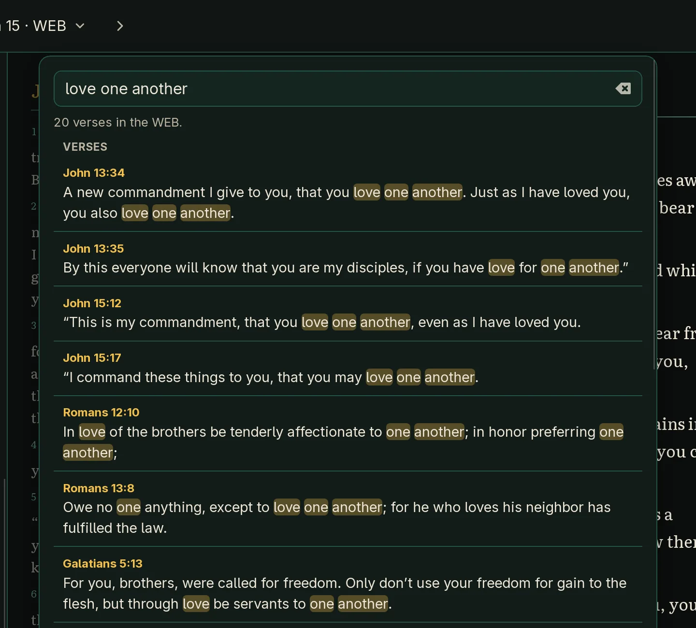
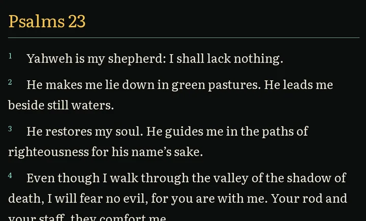
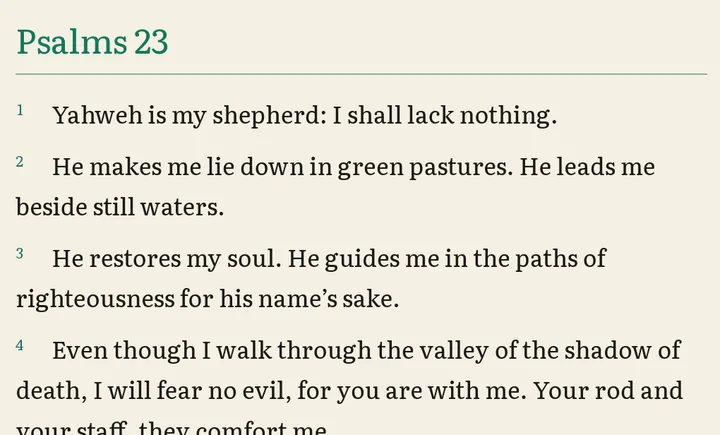
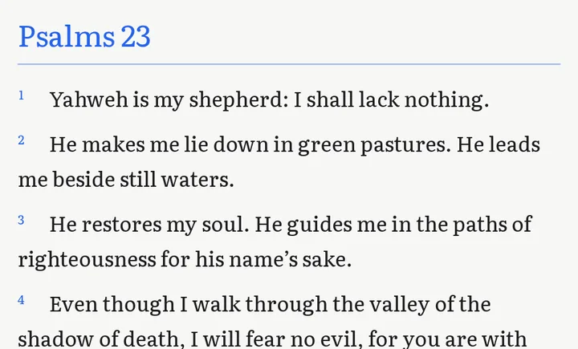
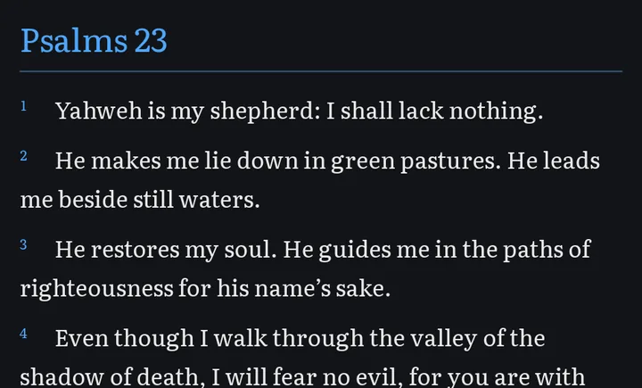
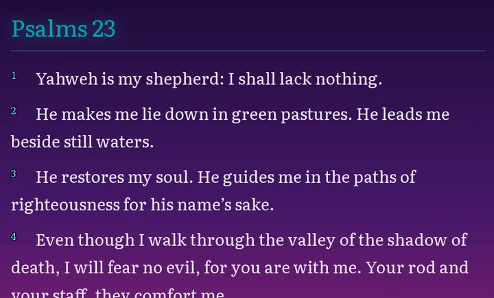
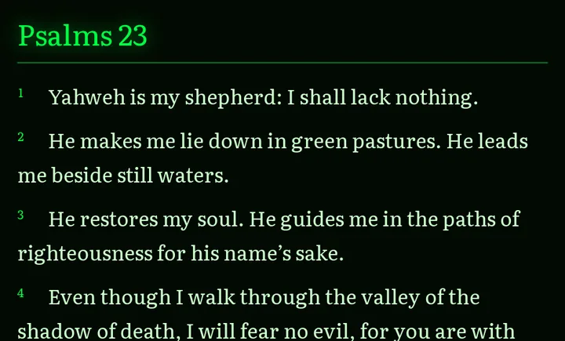
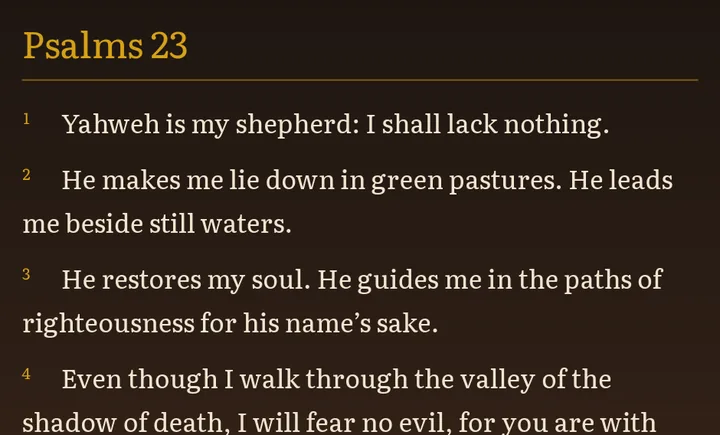
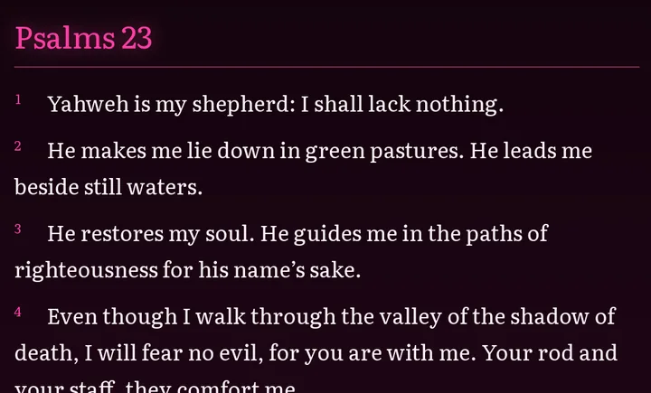

Gospel Getter · Free Bible reader for Windows & Linux
Read Scripture without the noise.
Read the KJV, BSB or WEB on your computer, even offline. Find a passage, compare translations, and come back to what matters—no account needed.
Version 2.19.0, for 64-bit Windows and Linux computers. The Windows installer isn’t code-signed yet, so Windows will probably warn you before it runs. What to expect.
Gospel Getter is a desktop app for Windows and Linux computers. There’s no phone, tablet or Mac version. To install it, open this page on your computer.
- Free — no price, no ads, no subscription
- Reads offline — all three translations are built in
- No account — nothing to sign up for
- Open source — MIT-licensed code on GitHub

A quiet place to read
Gospel Getter does a few things and stays out of the way. Every screenshot on this page is the real app.
Read in context
The chapter you’re reading sits in the middle, with the chapters before and after it faded on either side, as in the picture above. Press ← and → to turn chapters across the whole Bible, or use the buttons at the end of each chapter. The window’s title says where you are, and the window opens at the size and place you left it.
The reference at the top left, such as “John 3 · KJV”, always says where you are. Click it or press G to choose a book and chapter, or a random chapter, which opens at its top. On a wide window the books and chapters stay open in a sidebar you can hide. Alt+← and Alt+→ go back and forward through the passages you jumped to, and ? lists every keyboard shortcut.
Click a verse to see related passages in a card under it. Click one to read it right there in the card, a whole range at once, and Go to opens it. The card floats over the text, so nothing moves. Each chapter’s Cross references, at its end, link straight to their passages. The cross-references come from OpenBible.info.
In the KJV, words the translators supplied are in italics, as in printed KJVs, and its margin notes are lettered footnotes. The BSB’s translators’ footnotes are lettered where the BSB places them. Select a verse to read its notes, or open a chapter’s Footnotes at its end.
Find a passage quickly
Press / or Ctrl+K and type a reference such as John 3:16, 1 Cor 13 or Psalm 23 to go straight there. Type a book’s name, like Psalms or 1 John, to go straight to its first chapter, with the verses that mention it listed below.
Type anything else to search the words of the text. You get every verse that contains all your words, in Bible order, with the words highlighted. Search works offline too.
The same box runs commands, such as a theme or Compare, each shown with its key if it has one. Start with > to list commands only.

Keep what matters
- Copy with the reference. Click a verse, Shift-click another to select a range (holding Shift lets the click through the card to a verse it covers), then Copy in the card under them. You get the text followed by its reference, such as “— 1 Corinthians 13:4–7 (WEB)”. Copy as… adds verse numbers, makes a Markdown quote, or copies the text alone, and Copy chapter… at the end of each chapter copies all of it.
- Bookmark passages. Bookmarked verses get a star, and the Library (the bookmark button at the top) opens any of them again.
- Highlight verses. Highlight the verses you’ve selected in yellow, green, blue or pink, like a highlighter pen. They show in whichever translation you’re reading.
- See all your highlights. The Highlights list in the Library shows every highlighted passage in Bible order, with its color and a preview. Filter by color, or click one to go back to it.
- Write notes. Select verses and choose + Add note to write about them. A small ✎ marks verses with notes, selecting them shows the notes, and the Notes list in the Library has them all, in Bible order. Export notes… there saves them as a Markdown file to read or print, with each note’s verses quoted in the translation you’re reading. Choose the books, a chapter range for one book, and when the notes were written, and see how many notes match as you go.
- Back up or move your bookmarks. Export your bookmarks, highlights, notes, reading position and display settings to a file, and import them on another computer. You see what a file contains before anything changes. Bible text isn’t included.
- Pick up where you left off. Your chapter, translation, bookmarks, highlights, notes and settings are remembered.
![1 Corinthians 13 in the WEB in the Chi Rho theme, with 1 Corinthians open in the sidebar. Verses 4 to 7 are selected and marked with a pencil for their note. The card under them has Copy, Copy as…, Bookmark and + Add note buttons, four highlight color swatches and the reference “1 Corinthians 13:4–7 (WEB)”, then the note, “Paul describes love by what it does. Read verses 4–7 again with ‘Christ’ in place of ‘love’.”, and the cross-references for each verse. The card floats over the verses that follow.](assets/select-1600.webp)
Compare any two translations
Press C to read the translation you’re reading beside another, one row per verse, as with the King James Version and the World English Bible here. Choose the other with the translation button at the top of the app (it shows the one you’re reading, such as KJV), beside Compare. Where only one translation numbers a verse, the other column says so instead of shifting anything.
Every text is stored exactly as its public-domain source provides it. The KJV’s source marks supplied words and margin notes in braces, and the app shows them as print does: the words in italics, the notes as footnotes. The BSB’s text and footnotes are Berean’s own, word for word.

Made for your computer
Gospel Getter is a desktop app, not a website. Once it’s installed, you don’t need the internet to read.
- Windows and Linux. Installers for 64-bit Windows, and an AppImage or
.debfor Linux. - Works offline. The King James Version, the Berean Standard Bible and the World English Bible are built in, along with the cross-references and search.
- No account. There’s nothing to sign up for or log in to.
- Your reading stays on your computer. Bookmarks, highlights, notes, reading position and settings are kept on your computer, in the app’s own data folder. The app only goes online to check for a new version, which you can turn off, and to download one you’ve chosen to install.
- A native app. No browser to open and no background server.
- Free and open source. The code is on GitHub under the MIT license.
Make it yours
Under Aa, at the top of the app, choose from nine themes, four text sizes, three line spacings and three widths, set the verses one to a line or let each chapter flow as prose with small verse numbers, or switch on reading mode to hide everything but the text. Scripture is set in Literata, which comes with the app. The System theme follows your computer, Vellum when it’s light and Chi Rho when it’s dark. Printing is always black on white.
-

Chi Rho -

Vellum -

Classic Light -

Classic Dark -

Vaporwave -

Matrix -

Beast Slayer -

Hot Pink
Download Gospel Getter
Version 2.19.0. Free, for 64-bit Windows and Linux. What’s new
You seem to be on a phone or tablet. Gospel Getter runs on Windows and Linux computers only, so open this page on your computer to install it.
Windows
Before you download: the Windows installers aren’t code-signed yet. Windows SmartScreen will probably say it “protected your PC” from an “unknown publisher”. If you trust this download, choose More info, then Run anyway. More about this.
-
Windows installer (.exe)
Recommended for most people.
-
Windows MSI package
For people who prefer or manage MSI installs.
Linux
Choose one:
-
AppImage
Works on most distributions. Nothing to install: make it executable and run it.
-
.deb package
For Debian, Ubuntu and distributions based on them.
There’s no Mac, phone or tablet version, and no web version to read in a browser.
Support Gospel Getter
Gospel Getter is free and always will be. If it helps you, you can leave a tip. It’s entirely optional and changes nothing in the app.
Leave a tip
-
Leave a one-time tip
You choose the amount, from $1 to $500.
Support monthly
Payments are handled by Stripe.
Tipped by mistake? Write to help@chirhocode.com and we’ll refund it.
Installing: common questions
Why does Windows warn about an “unknown publisher”?
Windows shows that warning for programs that aren’t code-signed, and Gospel Getter’s installers aren’t signed yet. The warning is about that missing signature; it doesn’t mean Windows found a problem in the file.
If you downloaded the installer from this page or from the GitHub releases page, choose More info, then Run anyway. If you’d like to check the file first, compare its checksum (next question). If you’d rather not run unsigned software, that’s a reasonable choice, and you can wait for a signed release.
How do I check my download?
Each release lists the SHA-256 checksum of every file in SHA256SUMS. The installers are built by GitHub Actions from the tagged source, as the release notes explain.
On Linux, put SHA256SUMS in the same folder as your download and run:
sha256sum -c --ignore-missing SHA256SUMSOn Windows, in PowerShell, run this and compare the result with the matching line in SHA256SUMS:
Get-FileHash .\Gospel-Getter_x64-setup.exeAppImage or .deb?
The AppImage runs on most distributions without installing anything. Make it executable (in your file manager’s properties, or with chmod +x), then open it.
The .deb installs Gospel Getter like any other package on Debian, Ubuntu and their relatives, for example with sudo apt install ./Gospel-Getter_amd64.deb.
Does it update itself? Will I lose my bookmarks?
It can, and it always asks first. When Gospel Getter starts, it checks whether there’s a new version. If there is, it tells you, and nothing is downloaded or installed until you choose Update and restart. You can choose Later instead, or turn the check off in About Gospel Getter, from the ☰ menu. Check now there checks whenever you like, and shows a new version right there, with its release notes and Update now. If GitHub doesn’t answer within 20 seconds, it says so.
The Windows installers (setup.exe or MSI), the AppImage and the .deb from this page update themselves. If you built Gospel Getter yourself or installed it another way, the app offers a link to the download page instead.
Versions 2.6 through 2.19 update themselves to this one. Versions 2.5 and older can’t update themselves. If you have one of those, download the new version from this page and install it over the old one, just this once.
Checking downloads a small file from GitHub that names the latest version, so GitHub sees your IP address, as with any download. Nothing about your reading or your data is sent.
Updating keeps your bookmarks, highlights, notes, reading position and settings. To be safe, or to move to another computer, use Export data… in the ☰ menu first. A file exported by version 2.8 or newer needs 2.8 or newer to import, and one exported by 2.12 needs 2.12 or newer: 2.11 and older refuse a file whose theme they don’t know. From 2.12 on, a display setting the app doesn’t know is skipped with a notice, and the rest imports, as 2.12 does with a 2.13 file’s Width, 2.12 and 2.13 do with a 2.14 file’s Layout, and 2.12 to 2.14 do with a 2.15 file’s compare translation.
Which version is this?
The download buttons on this page always get the newest release. To see which version you have installed, open the ☰ menu in the app and choose About Gospel Getter: the version is shown under the name. Older versions are on the releases page.
Which translations are included?
Three: the King James Version (KJV), the Berean Standard Bible (BSB) and the World English Bible (WEB). All three are public domain, which is what lets them ship offline inside the app; the KJV is the default, and the translation button at the top of the app switches between them. About Gospel Getter, in the ☰ menu, credits each one’s source. Copyrighted translations such as the NIV and ESV aren’t included.
Cross-references are from OpenBible.info, licensed under CC BY 4.0.
Is there a Mac, phone or web version?
No. Gospel Getter is available for Windows and Linux computers only.
About the maker
Gospel Getter is made by Chi Rho Code LLC, a small software company. The app is free, and its source code is open on GitHub under the MIT license.
Chi Rho Code LLC makes software that’s simple, private and offline-first.
Found a problem, or have a question or an idea? Open an issue on GitHub (you’ll need a free GitHub account).